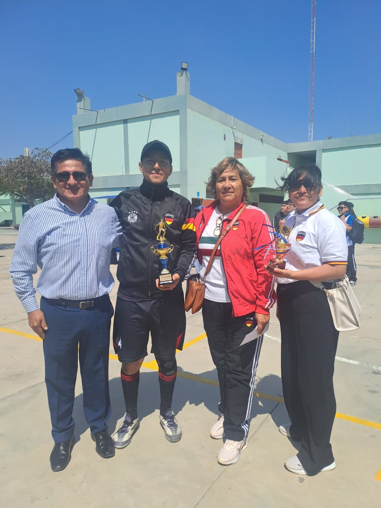
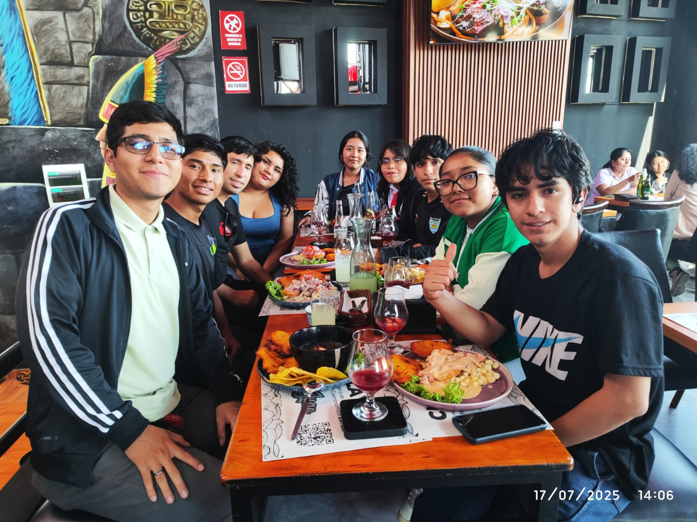
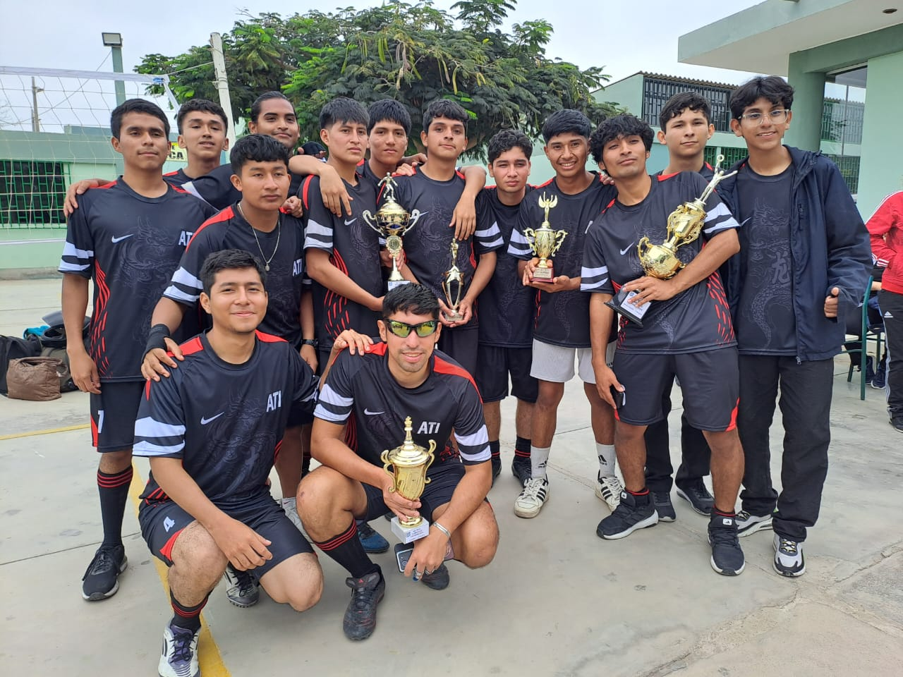
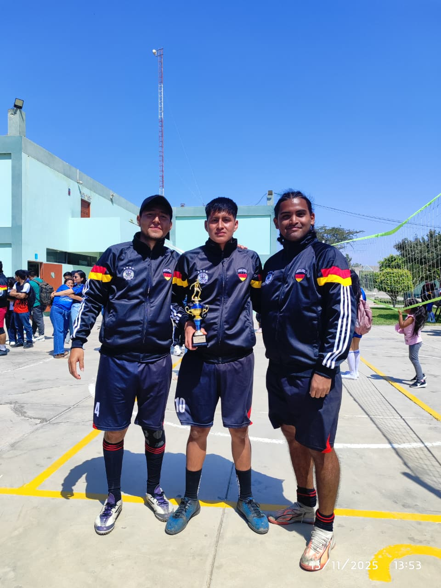
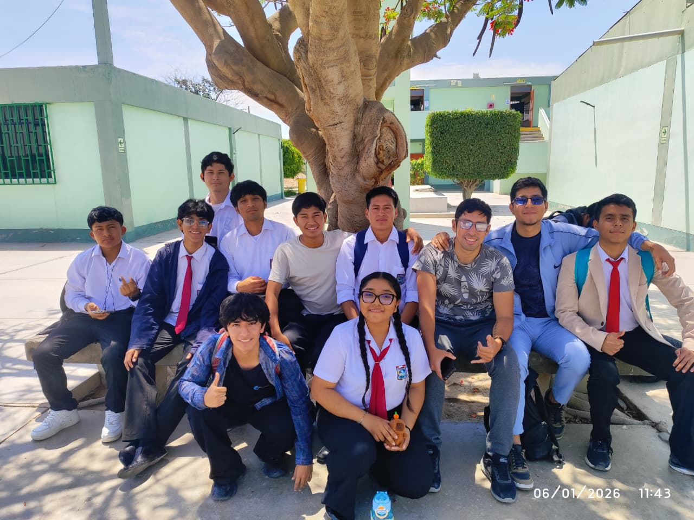

MI ÁLBUM
Fotografías destacadas
Ocho espacios preparados para tus imágenes personales.





Para mostrar tus fotos originales, copia img1.jpeg hasta img8.jpeg a la carpeta imagenesdemi .
ESPACIO PARA VIDEO PERSONAL
Tu video se verá aquí al agregar el archivo.
CONTENIDO MULTIMEDIA